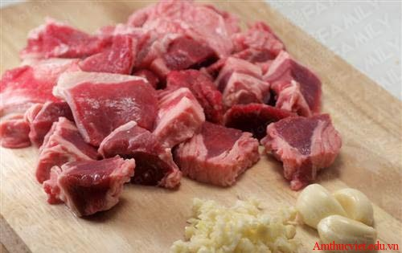
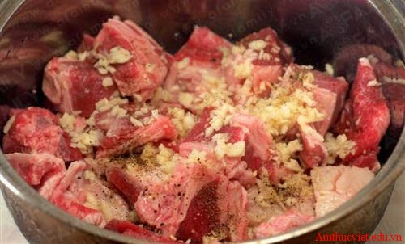
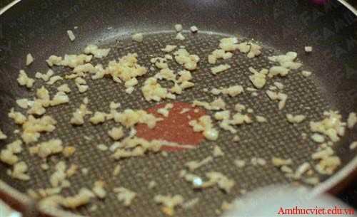
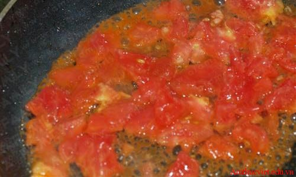
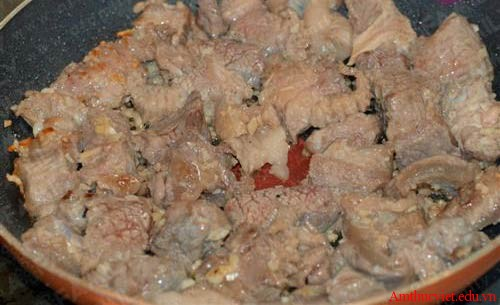
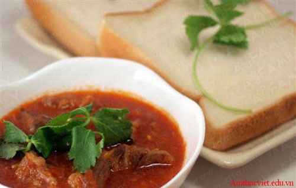

Bò sốt vang

Tô bò sốt vang nóng hổi ngon hết ý
Bò sốt vang rất dễ làm và thường ăn kèm với bánh mì hoặc cơm trắng rất ngon và lạ miệng. Hãy cùng chúng tôi chế biến món ăn thú vị này nhé!
Nguyên liệu:
- 500g thịt bò + gân bò80g nước sốt cà chua (tomato sauce – không phải tương cà chua ketchup bạn nhé)
- 80g nước sốt cà chua (tomato sauce – không phải tương cà chua ketchup bạn nhé)
- 1 quả cà chua chín
- 5 nhánh tỏi
- 20ml rượu vang (trắng hoặc đỏ)
- Muối, bột nêm, hạt tiêu vừa ăn.
Cách làm:
Thịt bò rửa sạch, thái miếng dày khoảng 1cm. Tỏi băm nhỏ.
Cho thịt bò, muối, hạt tiêu, 1/2 chỗ tỏi băm và 1/2 lượng rượu vang vào nồi ướp khoảng 30 phút – 1 tiếng.
Láng chút dầu ăn lên chảo nóng rồi cho nốt chỗ tỏi vào phi thơm.
Cho thịt bò đã ướp lên chảo xào cho miếng thịt săn lại thì trút ra đĩa, để riêng.
Cà chua rửa sạch, sau khi bỏ vỏ, bỏ hạt thì thái nhỏ rồi cho lên chảo xào nát.
Cho thịt bò đã xào ở bước 3, cà chua xào ở bước 4 cùng nước sốt cà chua và chỗ rượu còn lại vào nồi. Nêm thêm muối, hạt nêm tùy khẩu vị rồi cho nước nóng xăm xắp mặt thịt, đậy vung kín, ninh với lửa nhỏ khoảng 1 tiếng. Nếu không dùng nước sốt cà chua thì bạn có thể chỉ dùng quả cà chua đun lên thành sốt cũng được. Khi thịt bò gần được pha bột năng với nước rồi từ từ đổ vào nồi, đun sôi lại là có món bò sốt vang sánh mượt rồi!
Khi ăn, chỉ cần rắc thêm một chút tiêu cho thơm. Món này ăn nóng với cơm hoặc bánh mỳ, thậm chí là với phở, kèm với rau mùi nữa sẽ đảm bảo thơm ngon, hấp dẫn vô cùng.
Thịt bò chín mềm mà không nát, cộng thêm hương thơm nồng nàn từ các gia vị như tỏi, hạt tiêu, đặc biệt là rượu vang sẽ mang lại một món ăn thật giản dị mà ấm lòng cho cả nhà!